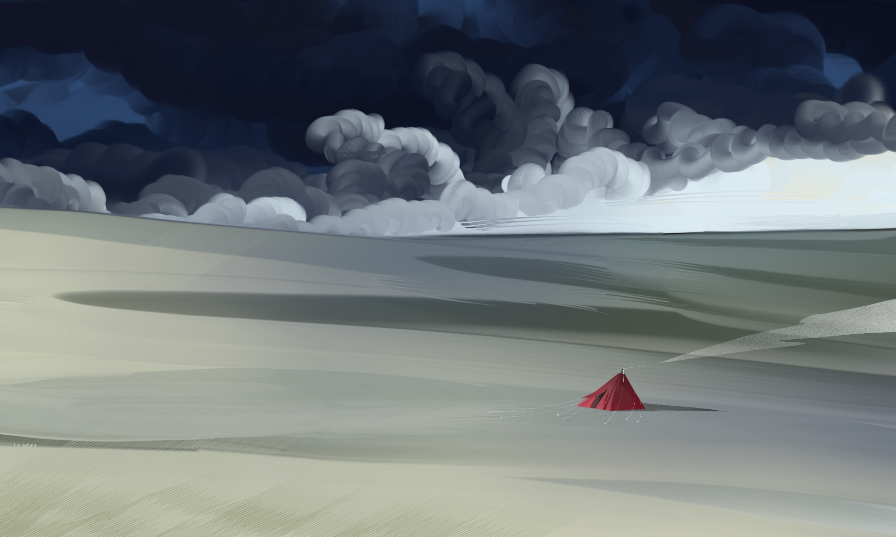
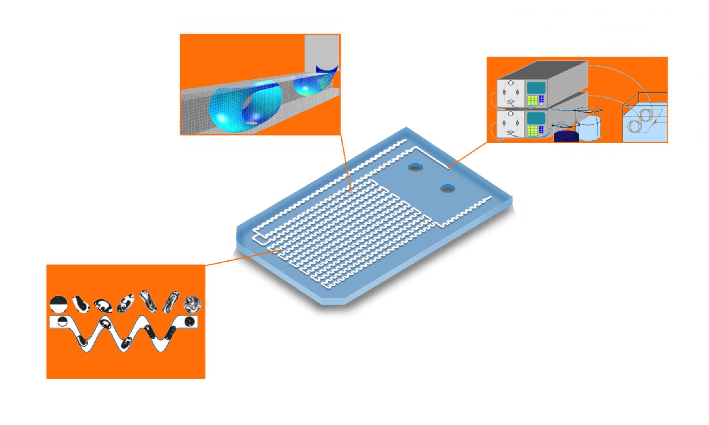
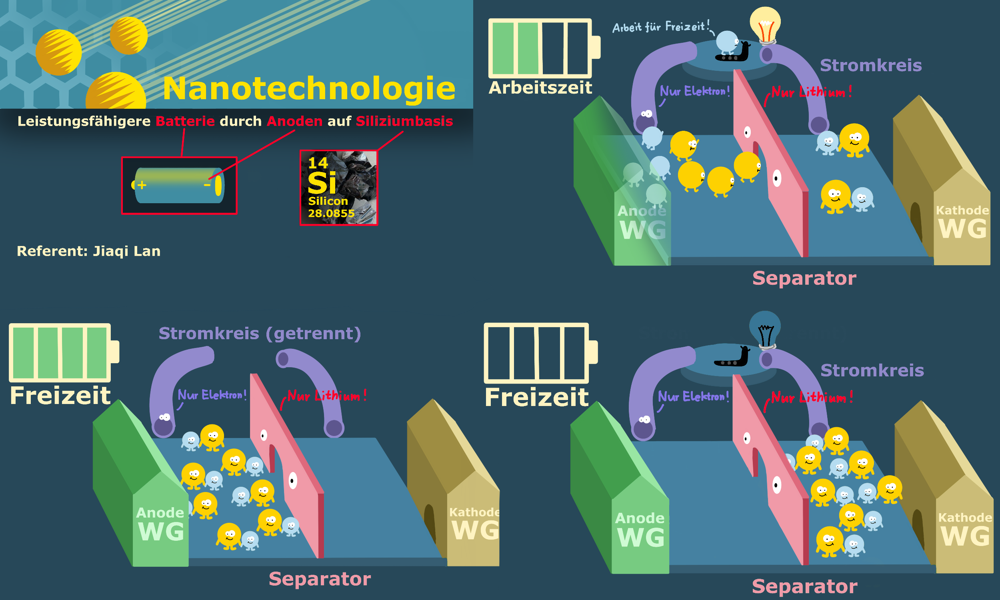

Gallery

Laurel Highlands handpainted 2021/01

Fantasy landscape map three groups, lighthouse, mountain peaks, airships 2022/04

Memories of Central Asia 2022/10

Flowchart of the undergraduate completion project: Fluids in microchannels 2024/6

An interesting illustration diagram about lithium batteries 2024/11